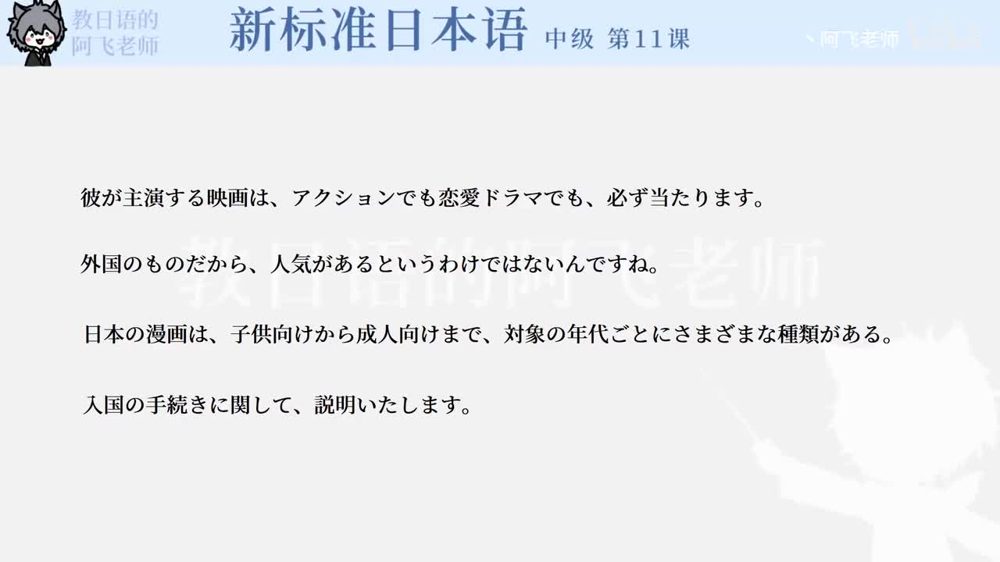

Bilibili P151 · Grammar 1
若者の意識：语法1
围绕电影是否卖座、外国事物是否受欢迎、漫画对象分类与入境手续说明，学习任意并列、部分否定、对象定位和正式话题范围。
全篇听力精讲
按 4 个语法点轮播。每项会播放核心含义、接续、常见用法、易错提醒、日语例句、中文意思和断句。
这一讲的四个抓手
无论哪类都成立「アクションでも恋愛ドラマでも」训练任意列举。
纠正单一推论「というわけではない」说明“并不是说……”。
按对象分类「子供向け」「年代ごとに」整理内容面向和分类单位。
正式限定话题「に関して」适合手续、报告和说明。
语法关系图
1 · 任意并列～でも～でも
2 · 部分否定～というわけではない
3 · 分类设计～向け／～ごとに
4 · 正式说明～に関して
语法精讲
重点词汇与搭配
练习与复习
来源说明：视频标题、时长、CID 和首帧来自 Bilibili 公开视频接口；语法项目依据 P151 首帧可见例句整理。本页是学习笔记，不是视频逐字稿。